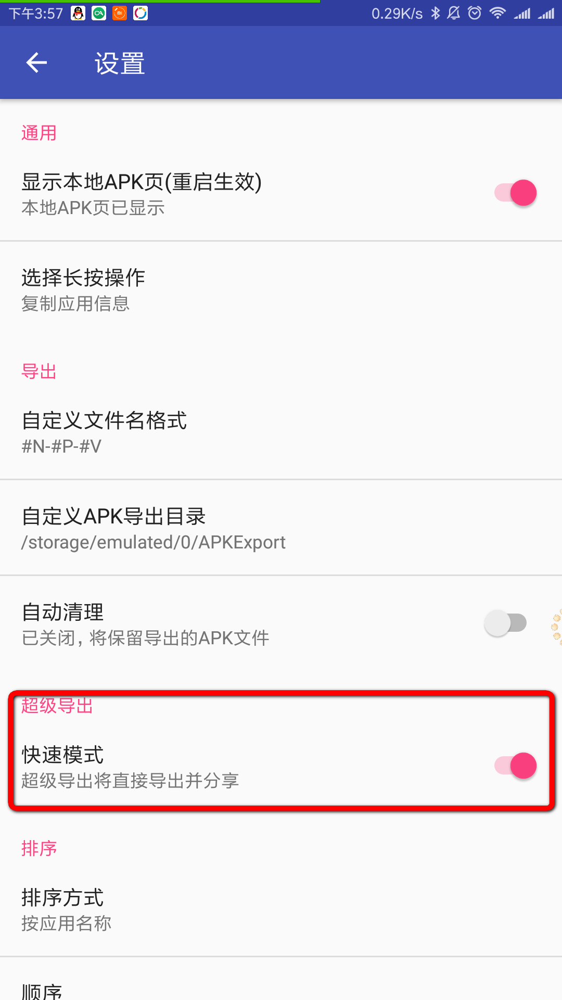

在某个应用中直接使用该应用的分享功能，分享时目标选择“提取该应用的APK”，之后会跳转到APKExport的APK导出界面，选择相应的操作即可。
以系统自带的相册为例，看视频演示：
1.到设置中，找到“超级导出”，打开“快速模式”开关  2.之后的操作和“完整模式”一样，只是不再弹出APK导出界面，选择“提取该应用的APK”之后，会直接提取该应用APK并分享。
导出速度太快了，为了展示导出过程中的进度条，找了一个比较大的应用，以UC浏览器为例，看视频演示：